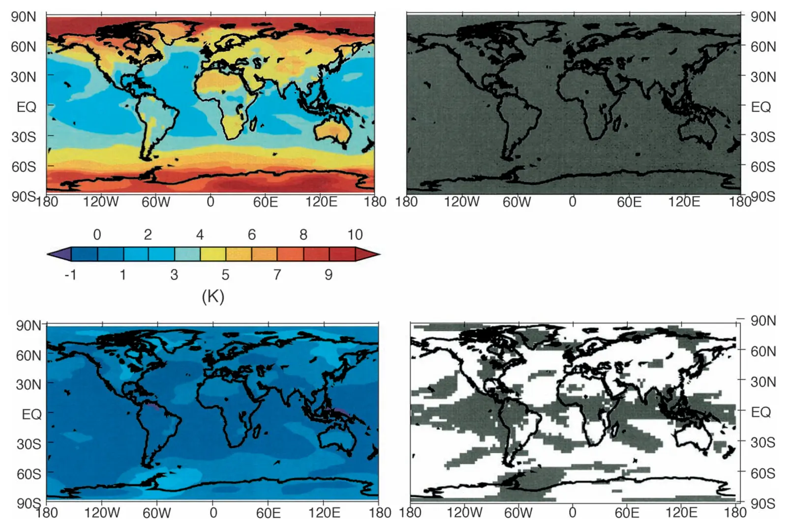

Geoengineering Earth's radiation balance to mitigate climate change from a quadrupling of CO2
Key finding. Reduced solar luminosity markedly diminishes regional and seasonal climate change under quadrupled CO2, but leaves identifiable residuals: significant decreases in surface temperature and net water flux in the tropics, incompletely compensated high-latitude warming, persistent stratospheric cooling from the greenhouse gases, and sea ice that is not fully restored.

What question did this research address?
An earlier study had shown that reducing sunlight could largely offset the regional and seasonal climate change from *doubled* carbon dioxide, despite the two forcings having very different spatial and temporal patterns.
Whether that continues to hold as the forcing grows is a different question — a mismatch that is small at 2×CO2 need not stay small at 4×. This paper tested the quadrupled case.
What did we find?
The main result is agreement with the doubled-CO2 case: the compensation still largely works at four times preindustrial carbon dioxide, so the earlier finding was not an artefact of a small perturbation.
The residuals have a consistent geography. The tropics end up cooler and drier than preindustrial, while the high latitudes remain warmer — the classic signature of offsetting a uniform greenhouse forcing with a sunlight reduction that is strongest where the sun is strongest.
Stratospheric cooling persists regardless, because it is caused by the greenhouse gases themselves and reducing sunlight does nothing about it.
Sea ice is not fully restored, so the cryosphere does not simply return to its former state when the global mean temperature does.
All of these residuals are much smaller than the change that quadrupling carbon dioxide would produce without any intervention.
The authors caution that the results come from a single model and should be interpreted with that in mind.
Why does it matter?
It established that the approximate cancellation holds at a large forcing, which is the case that matters — nobody proposes geoengineering against a small, manageable perturbation.
Naming the residuals precisely is what makes the result useful rather than reassuring. The tropics-cool, poles-warm pattern and the unrestored sea ice are the specific ways a geoengineered world differs from one that never warmed.
The persistent stratospheric cooling is a reminder that solar geoengineering addresses the energy balance and not the carbon dioxide, so some consequences are simply outside its reach.
Citation, data, and code
Bala Govindasamy, Ken Caldeira, and Philip B. Duffy (2003). Geoengineering Earth's radiation balance to mitigate climate change from a quadrupling of CO2. Global and Planetary Change 37, 157-168.
Related
- Could reflecting sunlight substitute for reducing carbon dioxide?
- Geoengineering Earth's radiation balance to mitigate CO2-induced climate change (Govindasamy and Caldeira, 2000)
- Geoengineering as an optimization problem (Ban-Weiss and Caldeira, 2010)
- Transient climate-carbon simulations of planetary geoengineering (Matthews and Caldeira, 2007)